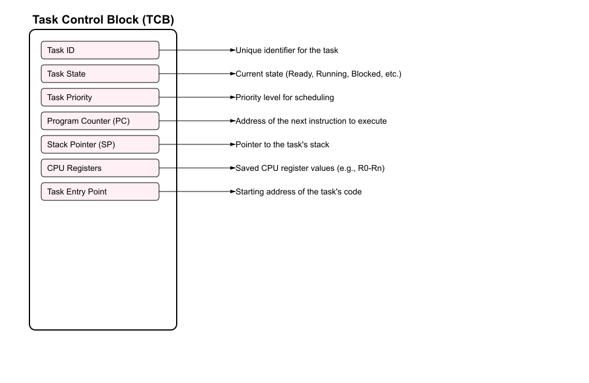

# rtos ## **Design of Autonomous Systems** ### csci 6907/4907-Section 86 ### Prof. **Sibin Mohan** --- what makes a **real-time operating system** "special"? --- what makes a **real-time operating system** "special"? _different_ from a general-purpose OS? --- ## predictability! --- ## predictability? --- ## predictability tasks complete → in a **timely** manner --- ## predictability tasks complete → in a **timely** manner <br> ## <scb>deadlines!</scb> --- ## real-time systems _correctness_ criteria --- ## real-time systems _correctness_ criteria | | | |------------------------|-----------------------------------------------------------------------------| | **functional** correctness | the system should work as expected| --- ## real-time systems _correctness_ criteria | | | |------------------------|-----------------------------------------------------------------------------| | **functional** correctness | the system should work as expected <br> _i.e._, carry out intended function without errors | --- ## real-time systems _correctness_ criteria | | | |------------------------|-----------------------------------------------------------------------------| | **functional** correctness | the system should work as expected <br> _i.e._, carry out intended function without errors | | **temporal** correctness | completed within a predefined timing constraint (**deadline**) | || --- in the context of this course, <img src="img/stack_architecture/stack_overview.4.png" width="700"> --- in the context of this course, <img src="img/stack_architecture/stack_overview.4.png" width="700"> <br> (we will come back to **actuation**) --- in the context of this course, <img src="img/stack_architecture/stack_overview.4.png" width="700"> <br> (we will come back to **actuation**...I promise) --- **desirable characteristics** of an RTOS? --- **desirable characteristics** of an RTOS? - determinism Note: | **determinism** | primary feature of an RTOS is its ability to perform tasks within guaranteed time frames; this predictability ensures that high-priority tasks are executed without delay, even under varying system loads | --- **desirable characteristics** of an RTOS? - determinism - scheduling Note: | **task scheduling** | RTOS uses advanced scheduling algorithms (e.g., priority-based, round-robin or earliest-deadline-first) to manage task execution; RT tasks are often assigned priorities and the scheduler ensures that higher-priority tasks preempt lower-priority ones when necessary | --- **desirable characteristics** of an RTOS? - determinism - scheduling - low latency Note: | **low latency** | RTOS minimizes interrupt response times and context-switching overhead, enabling rapid task execution and efficient handling of time-sensitive operations (_e.g._, Linux spends **many milliseconds** handling interrupts such as disk access!) | --- **desirable characteristics** of an RTOS? - determinism - scheduling - low latency - resource management Note: | **resource management** | RTOS provides mechanisms for efficient allocation and management of system resources, such as memory, CPU and peripherals, to ensure optimal performance | --- **desirable characteristics** of an RTOS? - determinism - scheduling - low latency - resource management - scalability Note: | **scalability** | RTOS is often lightweight and modular, making it suitable for resource-constrained environments like microcontrollers and embedded systems | --- **desirable characteristics** of an RTOS? - determinism - scheduling - low latency - resource management - scalability - reliability/fault tolerance Note: | **reliability and fault tolerance** | many RTOS implementations include features to enhance system stability, such as error detection, recovery mechanisms and redundancy | --- # kernel provides **essential services** for RTOS --- what kernel aspects matter in RTOS? --- ## RTOS kernel deals with, 1. [task management](#tasks-jobs-threads) 2. [communication and synchronization](#inter-task-communication-and-synchronization) 3. [memory management](#memory-management) 4. [timer and interrupt handling](#timer-and-interrupt-management) 5. [performance metrics](#kernel-performance-metrics) --- ### Tasks, Jobs, Threads design of RTOS deals with → **tasks**, **jobs** for implementation-specific details → **threads** --- real-time **task**, --- real-time **task**, $\tau_i$ = $(\phi_i, p_i, c_i, d_i)$ --- real-time **task**, $\tau_i$ = $(\phi_i, p_i, c_i, d_i)$ <br> | | | | ------ | ----------- | | $\phi_i$ | Phase (offset for first job) | | $p_i$ | Period | | $c_i$ | Worst-case execution time | | $d_i$ | Deadline | || --- real-time task **set**, $\tau = {\tau_1, \tau_2, ... \tau_n}$ a **collection** of $n$ tasks --- we use task set information to check → task set is **schedulable**? --- we use task set information to check → task set is **schedulable**? - check if **all** _jobs_ of a task → meet their deadlines --- we use task set information to check → task set is **schedulable**? - check if **all** _jobs_ of a task → meet their deadlines - **job** → an _instance_ of a task --- we use task set information to check → task set is **schedulable**? - check if **all** _jobs_ of a task → meet their deadlines - **job** → an _instance_ of a task multiple **schedulability tests** → depending on scheduling algorithms --- ### threads --- ### threads - an **implementation** of a task/job --- ### threads - an **implementation** of a task/job - depending on the OS, could be either or both --- ## task vs job vs thread --- ## task vs job vs thread | **aspect** | **task** | **job**| **thread** | |-------------|---------|--------|-------------| | **definition** | **unit of work** → a function in RTOS | **specific instance** of task → event | **smallest unit of execution** in task| --- ## task vs job vs thread | **aspect** | **task** | **job**| **thread** | |-------------|---------|--------|-------------| | **definition** | **unit of work** → a function in RTOS | **specific instance** of task → event | **smallest unit of execution** in task| | **granularity** | **coarse** → complete function/program | **fine** → single execution of task | **fine** → single execution flow in task | --- ## task vs job vs thread [contd.] | **aspect** | **task** | **job**| **thread** | |-------------|---------|--------|-------------| | **resource ownership** | **owns** resources (stack, memory) | doesn't own | **shares** resources with other threads in task | --- ## task vs job vs thread [contd.] | **aspect** | **task** | **job**| **thread** | |-------------|---------|--------|-------------| | **resource ownership** | **owns** resources (stack, memory) | doesn't own | **shares** resources with other threads in task | | **scheduling** | by RTOS kernel **scheduler** | not explicitly scheduled| scheduled by RTOS kernel, within task | --- ## task vs job vs thread [contd.] | **aspect** | **task** | **job**| **thread** | |-------------|---------|--------|-------------| | **concurrency** | **concurrent**, managed by scheduler | **sequential** within a task, may overlap across tasks | **concurrent** | | **state management** | maintains **own state** | **transient** state tied to task execution | maintains **own state**, shares task context| --- ## task vs job vs thread [contd.] | **aspect** | **task** | **job**| **thread** | |-------------|---------|--------|-------------| | **isolation** | **high**, tasks do not share resources | **none**, jobs part of task execution | **low**, threads share memory/resources within task | --- ## task vs job vs thread [contd.] | **aspect** | **task** | **job**| **thread** | |-------------|---------|--------|-------------| | **isolation** | **high**, tasks do not share resources | **none**, jobs part of task execution | **low**, threads share memory/resources within task | | **overhead** | **high**, separate stacks \& contexts | **minimal**, relies on task resources | **moderate**, threads share resources but require context switching | --- ## task vs job vs thread [contd.] | **aspect** | **task** | **job**| **thread** | |-------------|---------|--------|-------------| | **use case** | model **independent** functions or processes | **one** task execution | **parallelize** work within a task | --- ## task vs job vs thread [contd.] | **aspect** | **task** | **job**| **thread** | |-------------|---------|--------|-------------| | **use case** | model **independent** functions or processes | **one** task execution | **parallelize** work within a task | | **example** | controlling a motor | process one motor command | one thread to read sensors, one for logging data | || --- ### task control block (TCB) to describe/implement a task --- ### task control block (TCB) --- ### task control block (TCB) --- ### task control block (TCB) --- ### task control block (TCB) --- ### task control block (TCB) --- ### task control block (TCB) --- ### task control block (TCB)  --- ### task control block (TCB) --- ### task control block (TCB) --- ### task control block (TCB) <img src="img/rtos/tcb_sequence_png/tcb_10.png" height="800"> --- ### task control block (TCB) --- ### task control block (TCB) <img src="img/rtos/tcb_sequence_png/tcb_12.png" height="800"> --- ### task control block (TCB) <img src="img/rtos/tcb_sequence_png/tcb_12.png" height="800"> usually managed as part of **kernel queues** --- ### task **states** tasks cycle through a set of states: <img src="img/rtos/free_rtos/freertos_taskstate.gif" width="500"> example from [FreeRTOS](https://www.freertos.org/Documentation/02-Kernel/02-Kernel-features/01-Tasks-and-co-routines/02-Task-states) real-time OS --- ### task **states** tasks cycle through a set of states: ||| |-------|--------| |<img src="img/rtos/free_rtos/freertos_taskstate.gif">| <ul> <li>`READY`, `RUNNING` and `BLOCKED` → GPOS</li></ul>| || --- ### task **states** tasks cycle through a set of states: ||| |-------|--------| |<img src="img/rtos/free_rtos/freertos_taskstate.gif">| <ul> <li>`READY`, `RUNNING` and `BLOCKED` → GPOS</li> <li>**`IDLE`** or **`SUSPENDED`** → RTOS</li></ul>| || --- ### task **states** tasks cycle through a set of states: ||| |-------|--------| |<img src="img/rtos/free_rtos/freertos_taskstate.gif">| <ul> <li>`READY`, `RUNNING` and `BLOCKED` → GPOS</li> <li>**`IDLE`** or **`SUSPENDED`** → RTOS</li> <li>when periodic task completes **one** job</li></ul>| || --- ### task **states** tasks cycle through a set of states: ||| |-------|--------| |<img src="img/rtos/free_rtos/freertos_taskstate.gif">| <ul> <li>`READY`, `RUNNING` and `BLOCKED` → GPOS</li> <li>**`IDLE`** or **`SUSPENDED`** → RTOS</li> <li>when periodic task completes **one** job</li> <li>awakened by timer when next job is ready</li></ul>| || --- ### Context Switch Overheads - time and resources → to switch from one task to another --- ### Context Switch Overheads consider following example of **two** tasks ||| |------|------| |<img src="img/rtos/context_switch_code.1.png">|| || --- ### Context Switch Overheads consider following example of **two** tasks |||| |------|------|-------| |<img src="img/rtos/context_switch_code.1.png">||<ul><li>save `16` general-purpose registers</li><li>save `pc`, stack pointer</li><li>update memory protection unit </li><li>load new task's context (program into memory, registers, cache, _etc._)</li><ul>| || --- ### Context Switch Overheads on the **ARM Cortex-M4** | effect | cost| |--------|-------------| | basic context switch | `200-400` CPU cycles | | cache, pipeline → total overhead | `1000+` cycles | | frequent switching (e.g., every `1 ms`) | maybe `1-2%` of CPU time! | || --- ### Context Switch Overheads can add up, especially if the system has, - many RT tasks → frequent **preemption** - high-frequency/short period jobs → execute frequently - tasks contend with each other → shared resources --- RTOS must → **actively manage/mitigate** these issues -v- 1. **better task/schedule design** _e.g.,_ group related operations to reduce context switches ```C void Task_Sensors(void) { while(1) { // Handle multiple sensors in one task ReadTemperature(); ReadPressure(); ReadHumidity(); delay_ms(500); } } ``` -v- 2. **priority-based scheduling** _e.g.,_ high priority task gets more CPU ```C void CriticalTask(void) { // Set high priority setPriority(HIGH_PRIORITY); while(1) { ProcessCriticalData(); delay_ms(50); } } ``` -v- 3. **optimizing memory layouts** _e.g._, align task stacks to cache line boundaries ```C #define STACK_SIZE 1024 static __attribute__((aligned(32))) uint8_t task1_stack[STACK_SIZE]; ``` Note: not comprehensive and other strategies could be followed, for instance **avoiding multitasking altogether**! All functions could be implemented in a **single** process that runs a giant, infinite loop known as a [**cyclic executive**] --- **precise** understanding of context switch overheads is crucial --- **precise** understanding of context switch overheads is crucial - setting appropriate **task priorities** - determining minimum **task periods** --- **precise** understanding of context switch overheads is crucial - setting appropriate **task priorities** - determining minimum **task periods** - calculating **worst-case execution times** - meeting real-time **deadlines** --- **precise** understanding of context switch overheads is crucial - setting appropriate **task priorities** - determining minimum **task periods** - calculating **worst-case execution times** - meeting real-time **deadlines** - optimizing system **performance** --- ### (Inter-Task) Communication and Synchronization RTOSes use various mechanisms → synchronization/synchronization -v- 1. **Semaphores** <br> - **binary** semaphores: work like a mutex, with values 0 or 1 - **counting** semaphores: multiple values, useful for resource pools -v- ```c [2-3|7-10] // Example of binary semaphore usage semaphore_t sem; sem_init(&sem, 1); // Initialize with 1 void TaskA(void) { while(1) { sem_wait(&sem); // Critical section accessSharedResource(); sem_post(&sem); } } ``` -v- 2. **Mutexes** (mutual exclusion) <br> - provide exclusive access to shared resources - include **priority inheritance** → prevent **priority inversion** -v- ```c[1-2|5-8] mutex_t mutex; mutex_init(&mutex); void TaskB(void) { mutex_lock(&mutex); // Protected shared resource access updateSharedData(); mutex_unlock(&mutex); } ``` -v- 3. **Message Queues** <br> - they allow **ordered data transfer** between tasks - provide for buffering capabilities -v- ```c[1-2|4-7|9-13] queue_t msgQueue; queue_create(&msgQueue, MSG_SIZE, MAX_MSGS); void SenderTask(void) { message_t msg = prepareMessage(); queue_send(&msgQueue, &msg, TIMEOUT); } void ReceiverTask(void) { message_t msg; queue_receive(&msgQueue, &msg, TIMEOUT); processMessage(&msg); } ``` -v- 4. **Event Flags** <br> - enable **multiple tasks** to wait for one or more events - support `AND`/`OR` conditions for event combinations -v- ```c[1-3|7-8] event_flags_t events; #define EVENT_SENSOR_DATA 0x01 #define EVENT_USER_INPUT 0x02 void TaskC(void) { // Wait for both events event_wait(&events, EVENT_SENSOR_DATA | EVENT_USER_INPUT, EVENT_ALL, TIMEOUT); processEvents(); } ``` -v- 5. **Condition Variables**: <br> - tasks can wait for **specific conditions** - used with mutexes for complex synchronization -v- ```c[1-2|5|7|10] mutex_t mutex; cond_t condition; void ConsumerTask(void) { mutex_lock(&mutex); while(bufferEmpty()) { cond_wait(&condition, &mutex); } processData(); mutex_unlock(&mutex); } ``` --- ### Synchronization Mechanisms each mechanism → specific use cases --- ### Synchronization Mechanisms | mechanism | use case | |--------|------------| | **semaphores** | **resource management**, simple sync | --- ### Synchronization Mechanisms | mechanism | use case | |--------|------------| | **semaphores** | **resource management**, simple sync | | **mutexes** | **exclusive access** to shared resources | --- ### Synchronization Mechanisms | mechanism | use case | |--------|------------| | **semaphores** | **resource management**, simple sync | | **mutexes** | **exclusive access** to shared resources | | **message queues** | **data exchange** and task communication | --- ### Synchronization Mechanisms | mechanism | use case | |--------|------------| | **semaphores** | **resource management**, simple sync | | **mutexes** | **exclusive access** to shared resources | | **message queues** | **data exchange** and task communication | | **event flags** | **multiple event** synchronization | --- ### Synchronization Mechanisms | mechanism | use case | |--------|------------| | **semaphores** | **resource management**, simple sync | | **mutexes** | **exclusive access** to shared resources | | **message queues** | **data exchange** and task communication | | **event flags** | **multiple event** synchronization | | **condition variables** | complex **state-dependent** synchronization | || --- ### things to consider |issue | details | |------|---------| | **priority inversion** | HP → $R$ <br> $R$ → LP <br> MP **preempts** LP <br> MP **runs before** HP! | --- ### things to consider |issue | details | |------|---------| | **priority inversion** | HP → $R$ <br> $R$ → LP <br> MP **preempts** LP <br> MP **runs before** HP! | | **deadlocks** | $R_A$ → $\tau_1$; $\tau_1$ → $R_B$ <br> $R_B$ → $\tau_2$; $\tau_2$ → $R_A$ --- ### things to consider |issue | details | |------|---------| | **timeouts** | _every_ synchronization mechanism → timeout <br> avoid **indefinite blocking** | --- ### things to consider |issue | details | |------|---------| | **timeouts** | _every_ synchronization mechanism → timeout <br> avoid **indefinite blocking** | | **error handling** | detecting/handling errors → **robust** manner <br> _retry mechanisms_, _logging_, **clear recovery procedures** | || --- ### Memory Management requirement → **predictable memory allocation and deallocation** --- ### Memory Management requirement → **predictable memory allocation and deallocation** - limited memory management techniques - **no dynamic memory**! - use **only static** memory allocations --- ### memory management | goals - **tight control** of memory --- ### memory management | goals - **tight control** of memory - makes _timing behavior more predictable_ --- ### the following become easier - wcet analysis - schedulability and other analyses - runtime monitoring and management - recovery/restart --- ### rtos memory management often **avoids** - `malloc()` or `new()` - garbage collection --- ### rtos memory management often **avoids** - `malloc()` or `new()` - garbage collection - **no caches**! Note: if we cannot **exactly calculate** when some data/code will hit/miss in cache, then we cannot estimate its true timing behavior, leading to a lot of uncertainty → **bad**! Some RTSes use **scratchpads** --- ### Some memory-management techniques for RTOS --- ### Some memory-management techniques for RTOS 1. **static/compile-time memory allocation**: for all memory --- ### Some memory-management techniques for RTOS 1. **static/compile-time memory allocation**: for all memory 2. **memory pools**: fixed-size blocks pre-allocated <br> avoids fragmentation and provides deterministic allocation times --- ### Some memory-management techniques for RTOS 1. **static/compile-time memory allocation**: for all memory 2. **memory pools**: fixed-size blocks pre-allocated <br> avoids fragmentation and provides deterministic allocation times 3. **careful stack management**: sizing/placing/management of the stack --- ### Some memory-management techniques for RTOS 1. **static/compile-time memory allocation**: for all memory 2. **memory pools**: fixed-size blocks pre-allocated <br> avoids fragmentation and provides deterministic allocation times 3. **careful stack management**: sizing/placing/management of the stack 4. **limited heap memory**: using "safe" versions of `malloc()` for instance --- ### Some memory-management techniques for RTOS 1. **static/compile-time memory allocation**: for all memory 2. **memory pools**: fixed-size blocks pre-allocated <br> avoids fragmentation and provides deterministic allocation times 3. **careful stack management**: sizing/placing/management of the stack 4. **limited heap memory**: using "safe" versions of `malloc()` for instance 5. **hardware memory protection**: _e.g.,_ memory protection units (MPUs) --- ### Some memory-management techniques for RTOS 1. **static/compile-time memory allocation**: for all memory 2. **memory pools**: fixed-size blocks pre-allocated <br> avoids fragmentation and provides deterministic allocation times 3. **careful stack management**: sizing/placing/management of the stack 4. **limited heap memory**: using "safe" versions of `malloc()` for instance 5. **hardware memory protection**: _e.g.,_ memory protection units (MPUs) 6. **memory partitioning**: explicit partition memory/caches <br> tasks **cannot** read/write each others' memory regions --- ### Some memory-management techniques for RTOS 1. **static/compile-time memory allocation**: for all memory 2. **memory pools**: fixed-size blocks pre-allocated <br> avoids fragmentation and provides deterministic allocation times 3. **careful stack management**: sizing/placing/management of the stack 4. **limited heap memory**: using "safe" versions of `malloc()` for instance 5. **hardware memory protection**: _e.g.,_ memory protection units (MPUs) 6. **memory partitioning**: explicit partition memory/caches <br> tasks **cannot** read/write each others' memory regions 7. **runtime mechanisms**: memory usage monitoring, leak detection, <br> managing fragmentation Note: Of course, each of these mechanisms have their own problems and a deliberation on those is left as an exercise for the reader. ---